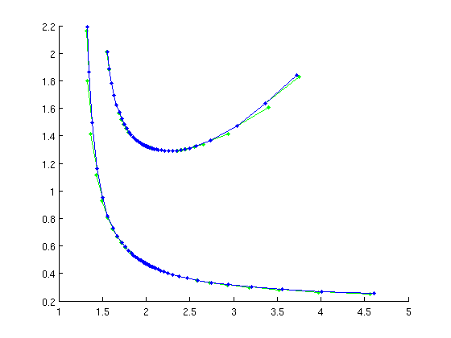

DDE-Biftool demo Mackey-Glass Equation
The Mackey-Glass equation is given by
Parameters are (in this order) beta, n, tau (gamma is not part of parameter vector).
(c) DDE-BIFTOOL v. 3.1.1(73), 31/12/2014
Contents
- load DDE-Biftool into path
- Enable vectorization
- Set user-defined functions
- Initial parameters and state
- Initialization of branch of non-trivial equilibria
- Compute and find stability of non-trivial equilibria
- Continue Hopf bifurcation in two parameters
- Compute L1 coefficient
- Branch off at Hopf bifurcation
- Find period doubling bifurcations in two parameters
- Check Floquet multipliers
- Branch off at period doubling
- Continue period doublings in two parameters for secondary PD
- Check Floquet multipliers along period doubling bifurcation
- Plot of period doubling bifurcation x profiles
- save
load DDE-Biftool into path
clear close all addpath('../../ddebiftool',... '../../ddebiftool_extra_psol',... '../../ddebiftool_extra_nmfm',... '../../ddebiftool_utilities');
Enable vectorization
(disable for speed comparison)
x_vectorize=true;
Set user-defined functions
using gamma as constant and (beta,|n|,|tau|) as parameters
gamma=1.0; beta_ind=1; n_ind=2; tau_ind=3; if x_vectorize f=@(x,xtau,beta,n)beta*xtau./(1+xtau.^n)-gamma*x; funcs=set_funcs(... 'sys_rhs',@(xx,p)f(xx(1,1,:),xx(1,2,:),p(1),p(2)),... 'sys_tau',@()tau_ind,... 'x_vectorized',true); else f=@(x,xtau,beta,n)beta*xtau/(1+xtau^n)-gamma*x; %#ok<UNRCH> funcs=set_funcs(... 'sys_rhs',@(xx,p)f(xx(1,1,:),xx(1,2,:),p(1),p(2)),... 'sys_tau',@()tau_ind); end
Initial parameters and state
beta0=2; n0=10; tau0=0; x0=(beta0-1)^(1/n0);
Initialization of branch of non-trivial equilibria
contpar=tau_ind; nontriv_eqs=SetupStst(funcs,'x',x0,'parameter',[beta0,n0,tau0],'step',0.1,... 'contpar',contpar,'max_step',[contpar,0.3],'max_bound',[contpar,10]);
Compute and find stability of non-trivial equilibria
disp('Trivial equilibria'); figure(1);clf nontriv_eqs=br_contn(funcs,nontriv_eqs,3); nontriv_eqs=br_stabl(funcs,nontriv_eqs,0,1); nunst_eqs=GetStability(nontriv_eqs); ind_hopf=find(nunst_eqs<2,1,'last'); fprintf('Hopf bifurcation near point %d\n',ind_hopf);
Trivial equilibria Hopf bifurcation near point 4
Continue Hopf bifurcation in two parameters
[hbranch,suc]=SetupHopf(funcs,nontriv_eqs,ind_hopf,... 'contpar',[beta_ind,tau_ind],'dir',beta_ind,'step',1e-3); figure(2);clf hbranch=br_contn(funcs,hbranch,30); hbranch=br_rvers(hbranch); hbranch=br_contn(funcs,hbranch,30);
Compute L1 coefficient
to find if Hopf bifurcation is supercritical (L1<0) or subcritical (L1>0)
[L1,L1low]=HopfLyapunovCoefficients(funcs,hbranch); fprintf('maximal L1 coefficient along Hopf branch: %g\n',max(L1)); fprintf('max of error estimate for L1 coefficient: %g\n',norm(L1-L1low,'inf'));
maximal L1 coefficient along Hopf branch: -4.22512 max of error estimate for L1 coefficient: 3.24906e-07
Branch off at Hopf bifurcation
disp('Branch off at Hopf bifurcation'); fprintf('Initial correction of periodic orbits at Hopf:\n'); [per_orb,suc]=SetupPsol(funcs,nontriv_eqs,ind_hopf,... 'print_residual_info',1,'intervals',20,'degree',4,... 'max_bound',[contpar,20],'max_step',[contpar,0.5]); if ~suc error('MackeyGlassDemo:fail',... 'MackeyGlassDemo: initialization of periodic orbit failed'); end figure(1); hold on per_orb=br_contn(funcs,per_orb,60); per_orb=br_stabl(funcs,per_orb,0,1); nunst_per=GetStability(per_orb,'exclude_trivial',true);
Branch off at Hopf bifurcation Initial correction of periodic orbits at Hopf: it=1, res=0.678113 it=2, res=0.254197 it=3, res=0.00767615 it=4, res=4.3608e-05 it=5, res=2.39552e-10 it=1, res=0.000474015 it=2, res=2.52388e-07 it=3, res=3.16761e-13 it=1, res=2.21451e-07 it=2, res=5.91749e-14 it=1, res=0.00153112 it=2, res=1.62608e-05 it=3, res=4.24821e-08 it=4, res=1.62731e-12 it=1, res=0.00229308 it=2, res=6.5338e-05 it=3, res=4.58407e-07 it=4, res=1.33502e-11 ...
Find period doubling bifurcations in two parameters
ind_pd=find(diff(nunst_per)==1); [pdfuncs,pdbranch1,suc]=SetupPeriodDoubling(funcs,per_orb,ind_pd(1),... 'contpar',[beta_ind,tau_ind],'dir',beta_ind,'step',1e-3); if ~suc error('MackeyGlassDemo:fail',... 'MackeyGlassDemo: initialization of period doubling failed'); end figure(2); pdbranch1=br_contn(pdfuncs,pdbranch1,30); pdbranch=br_rvers(pdbranch1); pdbranch=br_contn(pdfuncs,pdbranch,30);
it=1, res=0.788214 it=2, res=0.0916883 it=3, res=0.00253072 it=4, res=1.56425e-07 it=5, res=3.57514e-11 it=1, res=0.0112006 it=2, res=1.16378e-08 it=3, res=2.78844e-11 it=1, res=0.0069642 it=2, res=8.98603e-06 it=3, res=1.77941e-10 it=1, res=0.00537865 it=2, res=3.24797e-09 it=1, res=0.00646205 it=2, res=8.17251e-09 it=1, res=4.45395e-05 it=2, res=1.71072e-09 it=1, res=0.00265392 it=2, res=2.07429e-09 it=1, res=0.00316854 ...
Check Floquet multipliers
(note that Floquet multipliers are often unreliable)
pd1sols=pdfuncs.get_comp(pdbranch.point,'solution'); [nunst_pd,floqpd1,triv_defect,pd1sols]=GetStability(pd1sols,... 'exclude_trivial',true,'funcs',funcs); %#ok<ASGLU> fprintf('max defect of Floquet multiplier at -1: %g\n',max(abs(floqpd1+1)));
max defect of Floquet multiplier at -1: 1.12158e-05
Branch off at period doubling
(Solutions at far end get inaccurate.)
[per2,suc]=DoublePsol(funcs,per_orb,ind_pd(1)); if ~suc error('MackeyGlassDemo:fail',... 'MackeyGlassDemo: branching off at period doubling failed'); end figure(1); per2=br_contn(funcs,per2,60); per2=br_stabl(funcs,per2,0,1); [nunst_per2,dom,triv_defect]=GetStability(per2,'exclude_trivial',true); fprintf('max defect of Floquet multiplier at 1: %g\n',max(triv_defect));
it=1, res=0.0121409 it=2, res=0.0273993 it=3, res=0.000295009 it=4, res=2.36294e-08 it=5, res=2.4869e-13 it=1, res=0.00152497 it=2, res=8.5076e-09 it=1, res=0.0239432 it=2, res=0.027895 it=3, res=0.000300141 it=4, res=2.43515e-08 it=5, res=2.82441e-13 it=1, res=0.00178604 it=2, res=6.37172e-09 it=1, res=0.00221106 it=2, res=6.75198e-05 it=3, res=2.11874e-07 it=4, res=5.19771e-11 it=1, res=0.00135625 it=2, res=3.22848e-05 ...
Continue period doublings in two parameters for secondary PD
ind_pd2=find(diff(nunst_per2)==1); [pd2funcs,pdbranch2,suc]=SetupPeriodDoubling(funcs,per2,ind_pd2(1),... 'contpar',[beta_ind,tau_ind],'dir',beta_ind,'step',1e-3); if ~suc error('MackeyGlassDemo:fail',... 'MackeyGlassDemo: initialization of 2nd period doubling failed'); end figure(2); pdbranch2=br_contn(pdfuncs,pdbranch2,30); pdbranch2=br_rvers(pdbranch2); pdbranch2=br_contn(pdfuncs,pdbranch2,30);
it=1, res=1.21029 it=2, res=0.0935189 it=3, res=0.000124173 it=4, res=2.56318e-09 it=1, res=0.0396517 it=2, res=3.78669e-08 it=3, res=7.95417e-11 it=1, res=0.0242439 it=2, res=3.87749e-05 it=3, res=1.19399e-09 it=1, res=0.0248964 it=2, res=7.4681e-08 it=3, res=8.08447e-11 it=1, res=0.0298027 it=2, res=1.74531e-07 it=3, res=7.02087e-11 it=1, res=0.000163317 it=2, res=1.19874e-08 it=3, res=7.5671e-11 it=1, res=0.0210909 ...

Check Floquet multipliers along period doubling bifurcation
(Note that Floquet multipliers are often unreliable.)
pd2sols=pdfuncs.get_comp(pdbranch2.point,'solution'); [nunst_pd2,floqpd2,triv_defect,pd2sols]=GetStability(pd2sols,... 'exclude_trivial',true,'funcs',funcs); fprintf('max defect of Floquet multiplier at -1: %g\n',max(abs(floqpd2+1)));
max defect of Floquet multiplier at -1: 6.42923e-05
Plot of period doubling bifurcation x profiles
bifsols={pd1sols,pd2sols,hbranch.point};
floqpd={floqpd1,floqpd2};
get_par=@(i,k)arrayfun(@(x)x.parameter(i),bifsols{k});
figure(3)
clf;
subplot(3,2,[1,2]);
plot(get_par(beta_ind,1),get_par(tau_ind,1),'.-',...
get_par(beta_ind,2),get_par(tau_ind,2),'.-',...
get_par(beta_ind,3),get_par(tau_ind,3),'.-');
legend('PD1','PD2','Hopf');
xlabel('\beta');
ylabel('\tau');
title(sprintf(['Hopf, 1st and 2nd period doubling in Mackey-Glass eqn, ',...
' n=%g, gamma=1'],n0));
grid on
for k=1:2
subplot(3,2,2+k);
hold on
for i=1:length(bifsols{k})
plot(bifsols{k}(i).mesh*bifsols{k}(i).period,bifsols{k}(i).profile,'-');
end
hold off
box on
grid on
title(sprintf('PD%d: time profiles of period doubling',k));
xlabel('t');
ylabel('x');
subplot(3,2,4+k);
plot(1:length(bifsols{k}),floqpd{k}+1,'.-');
grid on
title(sprintf('PD%d: dist crit Floq mult from -1',k));
ylabel('error');
xlabel('point along branch');
end
save
save('MGresults.mat');